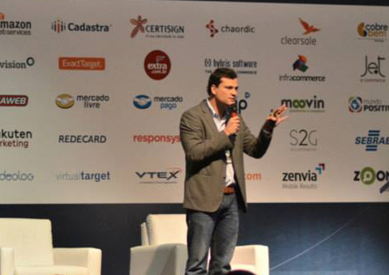

Fórum 2013
e-commerce Brasil
Excelência em e-commerce
Por Weimar C Baptistotti / @bwcolombo

O Evento
- Quarta edição
- Maior evento de e-commerce da América Latina
- Cerca de 3.000 profissionais reunidos
The New e-mail Best Practices
Nicole Delma - The Huffington Post
- Especialista em base de dados para e-mail marketing
- Fundadora FONDGroup
- mais de 10 anos de experiência com e-mail marketing
The New e-mail Best Practices
- Segmente e higienize a sua base da dados*
- Brasil = (+) promoção (-) conteúdo
- Template fácil de atingir o objetivo
- Utilize design responsivo - preocupe-se com o mobile!
- Faça testes a/b
- Colete dados, o que deu certo no passado e o que esta dando certo agora?
(*) DICA: Colete informações através do comportamento do cliente... Pessoas normalmente não sabem falar sobre si, peça para mostrar o que ela quer!
Do início a maturidade do e-commerce no Brasil
Talk Show
Jack London - Fundador Booknet
In Hsieh - Co-Founder 4vets.com.br
Do início a maturidade do e-commerce no Brasil
- Início do e-commerce (amazon e cdnow)
- Brasil Booknet (beta nov/95 | prod fev/96)
- Dificuldade do e-commerce (logística)
- Resistência ao e-commerce ainda é grande*
- Divulgação de problemas com o virtual atrapalha a confiabilidade**
- Digital é responsável por apenas 2,5% do varejo
(*) O usuário tem receio de inserir informações pessoais (CPF) e pagamento (cartões)
(**) Cliente normalmente não reclama de problemas com a loja física e os veículos de mídia não divulgam tais problemas.
Repensando entrega para e-commerce
Lemuel Costa e Silva - Gerente de e-commerce Correios
Repensando entrega para e-commerce
- FRETE-GRÁTIS - Previsivelmente Irracional
69% sim
31% não
- Informe seu cliente que ele pode se arrepender*
- Correios esta reformulando todo o webservice
- Terminais Automatizados - piloto nov/13
Funcionamento 24hrs.
Pontos estratégicos (estação de metrô, aeroportos, ...)
- Pagamento na entrega (cartões, boleto)**
(*) 2% é o número de arrependimento na compra online
(**) Previsão de 1 ano para o serviço estar disponível
Operação e gestão de um marketplace
André Garcia - Fundador e CEO
Operação e gestão de um marketplace
A necessidade e benefícios do televendas integrado ao e-commerce
Luiz Henrique Shiro - Gerente de e-commerce
A necessidade e benefícios do televendas integrado ao e-commerce
- SAC não é Televendas
- Informação sobre produto
- Recomendação
- Convence o cliente a comprar com garantia estendida*
- Cliente utiliza televendas por insegurança
(*) É apresentado todo o benefício da garantia estendida
Aprendendo com o DNA da Amazon
Juliano Tubino - Head of Marketing AWS
Aprendendo com o DNA da Amazon
- Obsessão pelo cliente
- Trocar sonho por negócio*
- Desenvolvem funcionalidades e disponibilizam
(*) A troca de sonho por negócio aumenta o seu faturamento!
Estratégia Mobile para e-commerce
Andrea Scarano - Diretor de Marketing
Estratégia Mobile para e-commerce
- Entenda seu negócio
- Colete dados sobre o mobile
- Porque o App no case Privalia é funcional?
- Qual a representatividade do Mobile no faturamento da Privalia?*
- Mobile não é futuro, é passado!
(*) 30% do faturamento da Privalia Brasil é de dispositivo mobile!
E-commerce Experiences
Darrin Shamo - Director of Direct and Online Marketing
E-commerce Experiences 1
- Fortalecimento da marca
- Estabeleça um procedimento para o seu crescimento
- Estrutura para o crescimento*
- Transparência dentro da organização**
(*) Construa uma organização autogerenciável, rápida, ágil e proativa
(**) Qualquer pessoa de qualquer departamento consegue "vender" a empresa
E-commerce Experiences 2
- Capture dados*
- Crie metas
- Análise as conversões
- Informe o consumidor
- Conceito de ciclo de vida em produtos
(*) Com base nos dados coletados, crie seus KPI's
Obrigado pela atenção
Bibliografias Recomendadas
Previsivelmente Irracional - Dan Ariely
Satisfação Garantida - Tony Hsieh